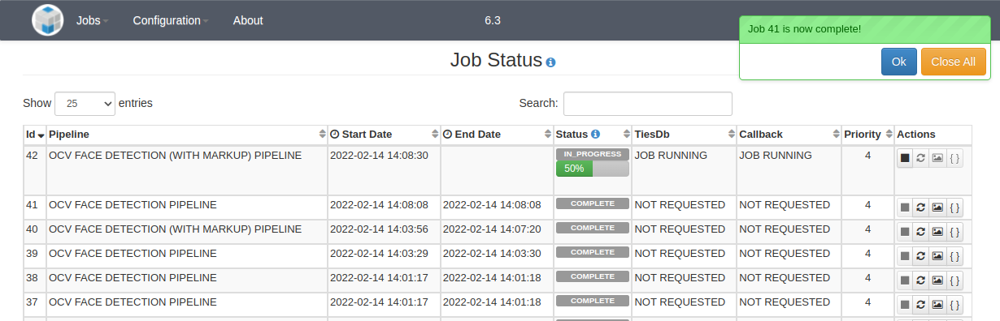
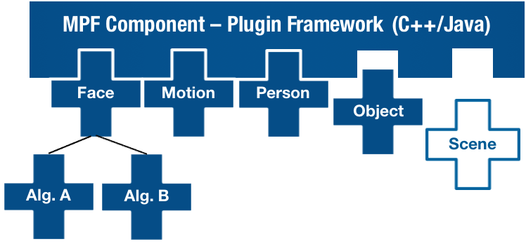

The Open Media Processing Framework provides a platform to perform content detection and extraction on bulk multimedia, enabling users to analyze, search, and share information through the extraction of objects, keywords, thumbnails, and other contextual data.
OpenMPF enables users to build configurable media processing pipelines, enabling the rapid development and deployment of analytic algorithms and large-scale media processing applications.
Search and Share
Simplify large-scale media processing and enable the extraction of meaningful content
Open API
Apply cutting-edge algorithms such as face detection and object classification
Flexible Architecture
Integrate into your
existing environment or use OpenMPF as a standalone application
Features
Web Interface & REST API
A modern
Web UI enables users to easily process bulk media and:
- Build configurable pipelines
- Create and monitor jobs
- Upload files for processing
- Monitor system logs and node status
- Administer configuration properties
- View processing statistics

Additionally, the
REST API exposes the same core functionality as the Web UI and enables applications to be built on top of OpenMPF.
Open Plugin API
The OpenMPF Plugin Architecture provides the ability to seamlessly integrate
detection,
tracking, and
classification algorithms in both
C++ and
Java.
New processing nodes can easily be added to increase processing throughput and new algorithms can be dynamically loaded and scaled to meet user needs.

OpenMPF includes open-source algorithms for detecting and tracking:
- Objects - Caffe
- Faces - Dlib, LBP-Based OpenCV
- People - HOG-Based OpenCV
- Text - OpenALPR
- Speech - Sphinx
- Motion - STRUCK, MOG, SuBSENSE
Customizable Pipelines
OpenMPF provides the ability to organize algorithms sequentially or in parallel. This enables users to create pipelines based on performance (fast to slow) to increase throughput on large datasets or run multiple concurrent algorithms (e.g., two competing face detection algorithms) to compare performance.

Customizable pipelines allow users to combine multiple algorithms based on performance (fast to slow) to increase throughput on large datasets
Getting Started
To start using OpenMPF:
Contact Us!
For questions, contact the
OpenMPF Dev Team and we'd be happy to help!
{% for post in paginator.posts %}
{{ post.title }}
{% if post.subtitle %}
{{ post.subtitle }}
{% endif %}
Posted on {{ post.date | date: "%B %-d, %Y" }}
{{ post.excerpt | strip_html | xml_escape | truncatewords: site.excerpt_length }}
{% assign excerpt_word_count = post.excerpt | number_of_words %}
{% if post.content != post.excerpt or excerpt_word_count > site.excerpt_length %}
[Read More]
{% endif %}
Tags:
{% if site.link-tags %}
{% for tag in post.tags %}
{{ tag }}
{% endfor %}
{% else %}
{{ post.tags | join: ", " }}
{% endif %}
{% endfor %}